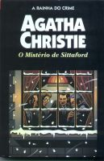

O Mistério de Sittaford
The Sittaford Mystery
Isoladas por uma grande tempestade de neve, duas estranhas inquilinas da mansão rural de Sittaford se reúnem com os poucos habitantes da minúscula aldeia vizinha com o propósito de passarem juntos a tarde. Como o ambiente é propício a fantasmas, decidem realizar uma sessão de espiritismo, e uma presença misteriosa comunica que acaba de ocorrer um assassinato a seis milhas de distância, fato que é comprovado poucas horas depois. O sagaz e minucioso inspetor Narracott, que desconfia das mensagens do além-túmulo, prende aquele que as pistas indicam como o único culpado possível. Por sorte do acusado, sua namorada — a bela, enérgica e corajosa Emily Trefusis — acredita na inocência do amado e decide demonstrá-la, descobrindo o verdadeiro assassino. Como costuma acontecer nos romances — às vezes também na realidade —, o criminoso acaba sendo o menos suspeito.